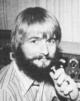
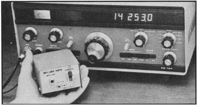

New Directions Radio
by COPTHORNE MACDONALD
November 1975
The folks at Earthmind have concentrated much of their effort on the development of Savonius rotor wind generators, but have also worked on techniques for restoring old Jacobs and Wincharger machines. Now they have an electric vehicle project going and are experimenting with solar collectors.
Recently, Mark Dankoff (WA2HVY/6)-who has been involved with New Directions activities for some time-moved to Earthmind to join Vanessa Naumann and Michael Hackleman (primary author of Wind and Windspinners and the newly published Homebuilt Wind-Generated Electricity Handbook). Mark has his ham station on the air, has been in frequent contact with Randy Brink (WA7BKR) and others in the West Coast New Directions group, and is eager to get in touch with still other radio amateurs who are involved with energy projects. You can reach him through the Sunday New Directions Roundtable sessions or by mail at Earthmind, 26510 Josel Drive, Saugus, California 91350. (Incidentally, Earthmind's publication list and general information sheet is available from the same address for 50 cents.)
More West Coast doings: Randy Brink recently chaired the ham radio workshop at a large alternative media conference in Olympia, Washington. As an outgrowth of this meeting, Randy has started a Northwest Alternative Ham Network to explore what radio freaks can do in the Pacific Northwest to promote community media, locally oriented public services, and a regional information exchange. The net meets Saturdays, at noon (Pacific Time) on 3898 kHz.
By the time you read this, the new Midwest and East Coast regional Roundtables will-I hope-be functioning smoothly. You may recall from the schedule in MOTHER NO. 35 that these gatherings are held on Monday and Thursday evenings at 8:00 p.m., local time. The exact frequencies will depend on just where we can find spaces between other net operations, and will be published in MOTHER NO. 37. In the meantime, Midwest participants should start looking up and down from 3949 kHz, and East Coast hams from 3944.
SOLID-STATE EQUIPMENT
While most of the amateur radio gear in use today employs vacuum tubes, solidstate equipment (which uses transistors and integrated circuits instead) is becoming increasingly popular. Advantages include lower power consumption, cooler running, smaller units, and fewer tuning controls . . . plus a benefit of special interest to back-to-the-land and nomadic folks: direct operation from a 12-volt storage battery (that of a vehicle, maybe, or one charged by a small wind generator).
Shown in the photograph are two examples of currently available solidstate gear . . . at opposite extremes of cost and complexity. The small handheld unit is a crystal-controlled CW (code only) transmitter for the 40-meter band. Its power input is about 5 watts with a 12-volt battery and 7 watts with 14 volts. This instrument performs very much like the homemade one-tube transmitter described in MOTHER NO. 34, and is available assembled and tested (less crystal) from MFJ Enterprises, P.O. Box 494, Mississippi State, Mississippi 39762 for the very low price of $21.95.
Doug Johnson (VE10M), a ham with a lot of low-power (QRP) experience, recently operated the MFJ unit for several days and made a number of contacts at distances of 600 to 800 miles. He reported, "Most amazing little rig! Tried a few old crystals . . . all worked well and keyed fast. Nice clean-sounding keying with a good DC note. Most contacts were made through heavy interference, and rarely did the other fellow not copy me solid. Would recommend this transmitter for new hams and old-timers too."
MFJ Enterprises' free catalog describes a number of other useful low-cost items. Among them is the popular CWF-2 CW Filter, a great help in receiving weak code signals through noise and interference. . .particularly when used with older receivers, or even with modern units which have inadequate CW selectivity. The Mississippi firm responsible for this filter is considering the introduction of other inexpensive products-including simple transceivers and receivers-and I hope these materialize.
The items already offered by MFJ are well engineered and perform basic communication jobs at little expense, without unnecessary frills. An example of these folks' savvy is that their units are built with wire salvaged from multiconductor telephone cables . . . thereby minimizing cost and effectively recycling a bit of our society's waste. Before long there will, I trust, be many other "cottage industries" turning out well-designed, high-performance, low-cost electronic products . . . and may they all do as good a job as MFJ Enterprises!
An interesting contrast to the 40-meter transmitter just described is the new Heathkit SB-104 5-band, 200-watt input/100-watt output transceiver (also shown in the photo). This rig has a lighted display (instead of the usual mechanical dial) of the actual frequency in use, and is packed with many other features that make it attractive to anyone who wants a versatile, medium-power, solid-state, multiband transceiver. Full technical details can be found in the company's catalog, available free from the Heath Company, Benton Harbor, Michigan 49022.
I built the transceiver shown . . . and believe me, it's no project for any but experienced amateurs and kit builders. Assembly of the SB-104 involves putting together over 2,800 parts in just exactly the right way, a job that took me 89 hours (I'm of the "go slow, check and double check" school).
The instructions with the SB-104, fortunately, are up to Heath's usual high standards. Nevertheless, to expect that not one of those nearly 3,000 bits and pieces will be bad, or marked incorrectly, or left out of the box, or wrongly installed by the builder is to make small allowance for human frailty. Although my unit worked OK from the start, I know of others that haven't. Heath is there as a backup in case of trouble, of course, but getting all the problems ironed out could take some additional frustrating weeks.
The SB-104 has another drawback apart from the difficulty of assembly: The frequency display, and the overall complexity of this unit, make for a battery drain greater than that of other available solid-state transceivers. On "receive", this amounts to 2.1 amperes (but can be cut to a more reasonable 0.8 amps if you install a switch to cut off the frequency display when it's not actually needed). Current drain in transmission periods can reach 20 amps during voice peaks and key-down CW conditions, but will average between 6 and 8 amps.
The price of the SB-104 kit is $669.95 . . . a lot of money. Those who have the cash, need features such as the accurate frequency readout, and consider their own labor as "free" may think it well worth the price. There are, however, lower-cost, ready-built solid-state transceivers which will satisfy the needs of most hams as well as, or better than, the expensive Heathkit.
One good example is the Argonaut, a low-power (5-watt), 5-band, SSB and CW transceiver manufactured by TenTec Inc., Sevierville, Tennessee 37862. This unit is small (4-1/2" X 13" X 7") and lightweight (6 pounds), costs $329 new and about $200 used, and is the favorite rig of many low-power enthusiasts. A companion linear amplifier (4-1/2" X 7" X 8", 2-1/2 pounds) is available for $159 and raises the transmitter power level to 100 watts DC input/50 watts RF (radio frequency) out.
Other possibilities are the products of Atlas Radio Inc., 417 Via Del Monte, Oceanside, California 92054. This company makes a family of small, medium power, solid-state transceivers which have become quite popular during the past year, especially for mobile use. The two latest versions are the 210X-which covers 80 through 10 metersand the 215X (160 through 15). Both models measure 9-1/2" X 3-1/2" X 91/2" and weigh 7 pounds. The current price is $649, though some units may still be available from dealers at $599.
None of the transceivers mentioned here includes a built-in AC power supply, though all the manufacturers sell AC sources as accessories. Lead-acid storage cells (such as 12-volt automobile or snowmobile batteries) or heavy-duty Ni-Cad batteries are needed for DC powering of solid-state equipment. The only exceptions are the 5-watt units (Argonaut transceiver and MFJ CW transmitter) which can also be operated from lantern batteries or flashlight-sized Ni-Cad cells connected in series to produce 12 to 14 volts. I use a snowmobile battery and 5-amp charger to power the SB-104, and a small battery hydrometer to check the storage cell's state of charge.
All solid-state rigs require that the antenna present an impedance close to 50 ohms at the transmitter output. Antenna matching should thus be checked with a VSWR meter (Ten-Tec units have an SWR meter built in . . . a very handy feature) and the antenna length should be trimmed or the tuner adjusted to give an SWR of 1.5/1 or less.
Peace,
Cop Macdonald (WØORX/VE1)
2612 Windsor Street
Halifax, Nova Scotia, Canada
 Solid-state equipment: a small crytal-controlled CW transmitter from MFJ Enterprises, and the complex Heathkit SB-104. |
 |
 |